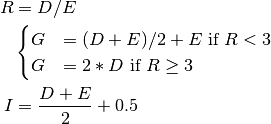
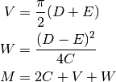
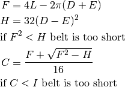
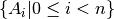
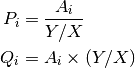
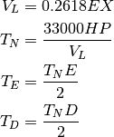

beltdriv – Belt Drives¶
See chain – Chain Drives, and gearing – Gears & Gearing.
Legacy Output¶
Intro and Menu:
BELT DRIVES (V-belts/Gear belts) by George Murphy VE3ERP
Press number in < > to select:
< 1 > Pulleys known
< 2 > Pulleys unknown, R.P.M.'s known
< 0 > Exit
The following is incomplete.
Sample Output:
ENTER: Pitch dia. - Pulley A (in.)...? 5
ENTER: Pitch dia. - Pulley B (in.)...? 2.5
Pitch diameter - small pulley....... 2.500
Pitch diameter - large pulley....... 5.000
Minimum c.c.(in.)................... 4.250
Ideal c.c.(in.)(V-belt drives).... 6.250
ENTER: Desired c.c.distance (in.)...? 8
Desired c.c.(in.)................... 8.000
Design Belt length (in.)............ 16.405
ENTER: Nearest standard belt (in.)..? 17
BELT TOO SHORT - Try a longer belt! ( Press SPACE BAR to continue )
Analysis¶
There are several calculations here: Pulley Size (from RPM), Belt Size (from pulley size) and tension/torque.
Menu Item “1” computes belt size from pulley sizes. This is a piece of the larger calculation.
E: Small Pulley Diameter D: Large Pulley Diameter I: Mimumum c.c. G: Ideal c.c. (V-belt drives) 
C: Desired c.c. M: Design Belt length 
L: Nearest standard belt C: Actual c.c. 
Since RPM’s aren’t known, nothing more is computed.
Menu Item “2” computes pulley sizes, belt length, and torque given RPM’s. This is the full calculation.
X: Known R.P.M. Y: Sought R.P.M. Given a collection, , of n pitch sizes, we have a number of alternative wheel combinations.

W: Selected Pulley, from the collection V: Calculated Pulley, either or We need to replace V with a standard-sized pulley close to the computed size, .
There are four cases that can occur. Avoiding any swapping of large and small values greatly simplifies this.
- X RPM is larger, target Y is smaller: we’re reducing RPM.
- Large pulley is standard (W) and small is computed (V): Small pulley at X RPM, large pulley at
.
- Small pulley is standard (W) and large is computed (V): Small pulley at X RPM, large pulley at .
- X RPM is smaller, target Y is larger: we’re increasing RPM.
- Large pulley is standard (W) and small is computed (V): Large pulley at X RPM, small pulley at .
- Small pulley is standard (W) and large is computed (V) Large pulley at X RPM, small pulley at
This sets D and E for the large and small pulleys, as well as the calculated value of Y, .
From here, calculation one (above) for belt length is done based on pulley sizes.
Finally, since X and are known from RPM calculations, and D and E are known from pulley sizing then the tension, speed and torque can be computed.
HP: Horsepower VL: Velocity on small pulley TN: Tension (lbs.) on belt(s) TE: In./lb. torque - small pulley shaft TD: In./lb. torque - large pulley shaft 
Implementation¶
hamcalc.construction.beltdriv
This has several calculation functions for various parts of the belt design process.
Test Case for pulley_choice_iter().
>>> import hamcalc.construction.beltdriv as belt
>>> choices = list( belt.pulley_choice_iter( 1700, 3500, 7, 5, 4.5 ) )
>>> [ ( round(d,1), round(e,1) ) for d,e in choices ]
[(7, 3.4), (14.4, 7), (5, 2.4), (10.3, 5), (4.5, 2.2), (9.3, 4.5)]
>>> belt.design_pulley_distances( 9.5, 4.5 )
(7.5, 11.5)
>>> l= belt.design_belt_length( 9.5, 4.5, 9 )
>>> round(l, 1)
40.7
>>> c= belt.final_pulley_distance( 9.5, 4.5, 42 )
>>> round( c, 1 )
9.7
>>> V, T, T_E, T_D = belt.tension_torque( 9.5, 4.5, 1700, 80 )
>>> round(V,1)
2002.8
>>> round(T,1)
1318.2
>>> round(T_E,1)
2965.9
>>> round(T_D,1)
6261.3
- exception hamcalc.construction.beltdriv.BeltTooShort[source]¶
This exception is raised when a selected belt can’t fit the minimum belt length requirements.
design_belt_length() defines the minimum.
- hamcalc.construction.beltdriv.design_belt_length(D, E, C)[source]¶
Given pulley sizes D and E and desired center-to-center distance, C, compute the required belt length.
Parameters: - D – larger pitch diameter
- E – smaller pitch diameter
- C – desired center-to-center distance
Returns: design belt length. This can be used to select a standard (or available) belt length.
- hamcalc.construction.beltdriv.design_pulley_distances(D, E)[source]¶
Given pulley sizes D and E, compute minimum and ideal center-to-center distance.
Parameters: - D – larger pitch diameter
- E – smaller pitch diameter
Returns: Pair of minimum and ideal distances.
- hamcalc.construction.beltdriv.final_pulley_distance(D, E, L)[source]¶
Given pulley sizes D and E and actual belt length, L, compute the required center-to-center distance.
Parameters: - D – larger pitch diameter
- E – smaller pitch diameter
- L – available belt length.
Returns: center to center distance.
Rauses : BeltTooShort if the belt can’t be fit.
- hamcalc.construction.beltdriv.pulley_choice_iter(X, Y, *pitches)[source]¶
Given X RPM and Y RPM, and a collection of wheel pitches, compute a list of potential wheel sizes that produce the desired RPM’s.
Parameters: - X – Known RPM
- Y – Sought RPM
Returns: Iterates over a sequence of pulley pairs. This can be used to select a pulley close to a standard (or available) size.
- hamcalc.construction.beltdriv.tension_torque(D, E, X, HP)[source]¶
Given pulley sizes D and E, RPM of X, and Horsepower of HP, compute velocity, tension on belt, and torque on each pulley.
Parameters: - D – larger pitch diameter
- E – smaller pitch diameter
- X – Known RPM
- HP – Horsepower
Returns: Tuple with Velocity, Tension, Torque on small wheel, Torque on large wheel